PoWatch · Generated documentation
A C4-structured audit of PoWatch: system context, containers and components; the vertical-slice boundary from each Blazor @page to its Minimal API MapGroup; and the exact ASP.NET Core middleware ordering — including why the static-asset and SPA-fallback routes must opt out of the default-deny authorization policy.
One web server does everything. It hands the browser a small app; the browser watches the room with its own camera and its own AI, then posts what it saw back to the same server. The server checks it, saves it to Azure Storage, and hands back timelines and reports. There is no second backend and no cross-origin traffic.

architecture_flow_verybasic.svgBecause the app and the API are the same website, the browser can hold an encrypted, HttpOnly cookie and never touch an access token. Nothing sensitive is reachable from JavaScript.
Every route requires a signed-in user unless it explicitly says otherwise. A new feature that forgets to add a guard is still protected. The app's own files are the deliberate exception — they must load before anyone can sign in.

architecture_flow_basic.svg| Container | Technology | Responsibility |
|---|---|---|
| Blazor WebAssembly client | .NET 10 WASM, Radzen components, source-generated JSON | All UI. Holds no tokens; derives auth state from /auth/me. |
| Inference Web Worker | transformers.js 3.8.1 + ONNX Runtime, self-hosted | Runs the vision model off the main thread so the UI stays responsive. |
| PoWatch.Api | ASP.NET Core Minimal APIs, Kestrel | Serves the WASM app and the API from one origin. Owns auth, storage, telemetry, diagnostics. |
| PoWatch.Application | Class library | Feature services and strongly-typed options. No ASP.NET dependency. |
| PoWatch.Domain | Class library | Entities, strongly-typed ids, classifiers. No infrastructure dependency. |
| PoWatch.Infrastructure | Class library | Azure Table/Blob adapters, summarizers, diagnostics — every outbound port. |
| PoWatch.Shared | Class library | DTOs shared by client and server. Trim-analyzer clean. |
| Dependency | Purpose | Required to boot? |
|---|---|---|
| Azure Table Storage / Azurite | Observations and subject profiles | No — falls back to in-memory repositories when unconfigured |
| Azure Blob Storage | Evidence images, Data Protection keyring | No — dev keyring falls back to the filesystem |
| Microsoft Entra ID | Interactive sign-in (OIDC code + PKCE) | No — OIDC is only wired when AzureAd:ClientId is set |
| Azure Key Vault | Secrets as a configuration source | No — flag-gated, defaults off in Production |
| Azure Monitor / App Insights | OTel trace export | No — exporter added only when a connection string exists |
| Hugging Face Hub | Vision model weights, fetched by the browser | Yes, for inference — the server boots fine without it |
| Azure OpenAI | Handoff brief generation | No — off by default, template fallback |
@page to MapGroupEach screen owns a route group. The mapping is one-to-one except where a screen legitimately reads across slices.
| Razor page | Route group(s) | Endpoints | Guard |
|---|---|---|---|
@page "/" ObserverHub | /api/observer, /api/identity, /api/blobs | 4 + 6 + 3 | [Authorize] + RequireAuthorization() |
@page "/archives" | /api/archives | 3 | [Authorize] + RequireAuthorization() |
@page "/identity" IdentityNexus | /api/identity | 6 | [Authorize] + RequireAuthorization() |
@page "/diagnostics" | /api/diagnostics | 2 | [Authorize] + RequireAuthorization() |
@page "/health" | /health (content-negotiated) | 1 | Anonymous by design |
@page "/login" | /auth | 5 | Anonymous by design |
@page "/not-found" | — | 0 | — |
| no page | /fhir | 2 | RequireAuthorization() + flag filter — a machine-facing slice |
The order below is the executing order in Program.cs. Two placements are deliberate and load-bearing.
/health content negotiationRewrites GET /health to /index.html when the client sends Accept: text/html, so a browser gets the Health page while probes still get JSON.UseRouting() — called explicitlyBecause step 1 must run before endpoint selection. Left implicit, the framework would insert routing at the head of the pipeline and the rewrite would have no effect.UseExceptionHandlerWrites a ProblemDetails body; the exception text is exposed only when ExposeDebugDetailsInUi is true.UseHttpsRedirection — non-Development onlyDev binds HTTP only; unconditional use produced a warning on every request.UseRateLimiterSee the finding below — the registered policy is never attached to an endpoint.CorrelationIdMiddlewareHonours or mints X-Correlation-ID, echoes it, and pushes correlation, user and session onto the Serilog context.UseAuthentication → UseAuthorizationCookie is the default scheme; OIDC becomes the default challenge only when a client id is configured./health, /diag, /diag/bootReachable without a session so probes and operators can diagnose a degraded instance.MapStaticAssets().AllowAnonymous()This is the /_framework opt-out — see below.MapFallbackToFile("index.html").AllowAnonymous()The SPA host page must load for signed-out users, or the client can never render /login./_framework opt-out, in one paragraphA fallback authorization policy makes every endpoint without explicit metadata require an authenticated cookie. The Blazor WebAssembly runtime — /_framework/blazor.webassembly.js, dotnet.js, the .wasm runtime and every assembly — is served by MapStaticAssets(), which would inherit that policy. The result would be circular: the browser cannot load the app that renders the login page, so nobody can ever sign in. .AllowAnonymous() on MapStaticAssets() and on MapFallbackToFile() breaks the circle. These two calls are the entire public static surface, and they are the correct place for the exception.
| Store | Partition key | Row key | Why |
|---|---|---|---|
Table PoWatchObservations | UTC date yyyyMMdd | {subjectId}_{eventId:N} | Day-scoped reads are the dominant query. The row key is derived from the stable event id only, so an idempotent resubmit maps to the same row and the resulting 409 is treated as success. |
Table PoWatchSubjects | constant "Subjects" | {subjectId} | The subject roster is small and always read whole. |
Blob significant-images | significant-images/{yyyyMMdd}/{subjectId}/{guid:N}.jpg | Evidence frames, uploaded by the browser straight to storage with a 30-minute SAS. | |
Blob dataprotection-keys | keys.xml | Shared keyring so BFF cookies survive restarts and scale-out. | |
AddSlidingWindowLimiter("ApiPerIpPolicy", …) registers a named policy, and UseRateLimiter() runs — but no endpoint calls .RequireRateLimiting("ApiPerIpPolicy") and no GlobalLimiter is configured. A named policy applies only where it is attached, so today the limiter admits every request. Separately, the policy is not partitioned by any key despite its name: were it attached as-is, the 60-requests-per-minute window would be shared by all callers rather than applied per IP.
PoWatchSubjects uses a single constant partitionEvery subject row shares PartitionKey = "Subjects". That is a reasonable trade for a facility-sized roster read whole on every dashboard poll, but it caps the table's scalability at one partition's throughput and makes the roster a hot spot under fleet-wide load.
Domain depends on nothing; Application depends on Domain and its own contracts; Infrastructure implements those contracts; the API host composes them. Every outbound dependency is behind an interface with an in-memory alternative, which is why the app boots without Azure.

architecture_flow_complete.svg| Element | Type | Relationship to PoWatch |
|---|---|---|
| Caregiver / observer | Person | Primary actor. Runs the observation loop, names subjects, generates handoff briefs. |
| PoWatch | Software system | Mobile-first room observation. One deployable, one origin. |
| Microsoft Entra ID | External system | OIDC authorization-code + PKCE sign-in. Issuer validated against AzureAd:AllowedTenants when supplied. |
| Azure Storage | External system | Tables (observations, subjects) and blobs (evidence, keyring). Azurite locally. |
| Azure Key Vault | External system | Optional configuration source, flag-gated; defaults off in Production so a missing role assignment cannot turn boot into a 500.30. |
| Azure Monitor / App Insights | External system | OpenTelemetry trace export; cloud_RoleName mapped from the entry assembly. |
| Azure OpenAI | External system | Optional handoff-brief generation. |
| Hugging Face Hub | External system | Serves ONNX vision-model weights directly to the browser. |
| FHIR R4 consumer | External system | Reads /fhir/Observation search and read endpoints. |
| Container | Technology | Runs in | Talks to | Notes |
|---|---|---|---|---|
| Blazor WASM client | .NET 10, Radzen, PoWatchJsonContext source generation | Browser | PoWatch.Api (same origin), Blob Storage (SAS PUT) | Trim-analyzer clean; no reflection-heavy serialization; holds no tokens |
| Inference worker | ES module Web Worker, transformers.js 3.8.1 (vendored), ONNX Runtime WASM/WebGPU | Browser (off main thread) | Hugging Face Hub | Library and ORT wasm are same-origin and version-pinned by folder name |
| PoWatch.Api | ASP.NET Core Minimal APIs, Kestrel, Serilog, OpenTelemetry | Azure App Service or local | All Azure dependencies | Also the static host for the WASM app — hence no CORS anywhere |
| PoWatch.Application | netstandard-style class library | In-process | Contracts only | Nine services, seven options classes; no ASP.NET types |
| PoWatch.Domain | Class library | In-process | Nothing | Strongly-typed SubjectId / ObservationEventId with explicit boundary conversions |
| PoWatch.Infrastructure | Class library | In-process | Azure SDKs, HttpClient | Every adapter has an in-memory sibling selected at DI time |
| PoWatch.Shared | Class library | Both | — | The DTO contract; referenced by client and server alike |
| Slice | MapGroup | Endpoints | Application service | Infrastructure port |
|---|---|---|---|---|
| Auth | /auth | GET /me, GET /config, GET /login/microsoft, GET /login/fake, POST /logout | — | Cookie + OIDC handlers, Data Protection keyring |
| Observer | /api/observer | POST /ingest, GET /state, GET /events (SSE), POST /acknowledge | ObservationService, AlertThresholdEvaluator | IObservationRepository, ISubjectRepository, IObservationProcessingGate, ITelemetryContentSanitizer, IAcknowledgementRegistry |
| Archives | /api/archives | GET /{date}, GET /{date}/handoff-report, POST /{date}/handoff-brief | ArchivesService, ReportService, HandoffCoachService, ShiftClock | IObservationRepository, IHandoffSummarizer, QuestPDF renderer |
| Blobs | /api/blobs | GET /sas, GET /read, POST /integrity | — | IBlobSasProvider |
| Identity | /api/identity | POST /subjects, GET /subjects, PATCH /subjects/{id}, POST /merge, GET /subjects/live-status, GET /subjects/live-risk, GET /subjects/{id}/baseline | IdentityService, DriftRadarService, DriftMath | ISubjectRepository, IObservationRepository, HybridCache |
| FHIR | /fhir | GET /Observation, GET /Observation/{id} | FhirMappingService | IObservationRepository |
| Diagnostics | /api/diagnostics | GET /status, POST /reset | — | IDiagnosticsProvider, IStorageResetService |
| Ops roots | none (mapped on the app) | GET /health, GET /diag, GET /diag/boot, GET /openapi/v1.json, GET /scalar/v1 | — | Health checks, StartupReadiness |
| Slice | Endpoints | Anonymous |
|---|---|---|
| Auth | 5 | 5 |
| Observer | 4 | 0 |
| Archives | 3 | 0 |
| Blobs | 3 | 0 |
| Identity | 7 | 0 |
| FHIR | 2 | 0 |
| Diagnostics | 2 | 0 |
| Ops roots | 5 | 3 |
The rule under audit: one screen, one route group, and no cross-slice service reuse that would let a change in one feature break another.
@page | Component | Primary MapGroup | Secondary groups read | Verdict |
|---|---|---|---|---|
/ | ObserverHub.razor (+ 3 partial code-behinds) | /api/observer | /api/identity (subject roster, live status), /api/blobs (evidence SAS) | Justified crossing — the live board legitimately renders roster state; both reads are query-only |
/archives | Archives.razor | /api/archives | /api/blobs (evidence read URLs) | Clean |
/identity | IdentityNexus.razor | /api/identity | — | Clean |
/diagnostics | Diagnostics.razor | /api/diagnostics | — | Clean |
/health | Health.razor | /health | — | Clean — one route serving two content types |
/login | Login.razor | /auth | — | Clean |
/not-found | NotFound.razor | — | — | Client-only |
| none | — | /fhir | — | Machine-facing slice — no UI is expected |
BlobEndpoints is mapped from inside ArchivesEndpoints.MapArchivesFeature() — the Archives slice registers the /api/blobs group as a nested concern — yet ObserverHub is the heaviest consumer of that group (it requests an upload SAS on every significant observation). The grouping is defensible (evidence blobs are archive artefacts) but the ownership does not match the traffic, and a future change to the Archives slice can silently move the blob routes.
| # | Stage | Condition | Why here | Verdict |
|---|---|---|---|---|
| 0a | Serilog bootstrap logger | always | Captures startup errors before the host exists. A plain logger rather than a reloadable one, so repeated WebApplicationFactory host creation in integration tests cannot re-freeze a shared instance. | Correct |
| 0b | Kestrel port negotiation | always | Negotiates a free port when the configured one is held by a stale process, instead of failing the host with HTTP 500.30. | Correct |
| 0c | Key Vault configuration source | EnableKeyVault && valid URI | Must be added before feature flags are bound, or a flag stored as a secret is read as its default. | Correct |
| 0d | Options binding with ValidateOnStart() | always | A bad table name, polling interval or Azure OpenAI range aborts boot with an actionable message rather than throwing lazily on first use. | Correct |
| 1 | /health HTML rewrite | GET + Accept: text/html | Must precede routing. If routing ran first, the health endpoint would already be selected and rewriting the path would have no effect — a verified past failure. | Correct — and load-bearing |
| 2 | UseRouting() — explicit | always | Called explicitly for exactly the reason above; the implicit insertion point would be ahead of step 1. | Correct |
| 3 | MapOpenApi / MapScalarApiReference | always | Mapped early. Position does not affect their authorization, which is decided by endpoint metadata — they carry none, so the fallback policy protects them. | Works, but surprising — the protection is implicit |
| 4 | UseExceptionHandler | always | Wraps everything downstream. Detail is gated on ExposeDebugDetailsInUi; traceId is always attached. | Ordering caveat — it sits after the two Map* calls above, so an exception thrown inside the OpenAPI document pipeline is not wrapped by it |
| 5 | UseHttpsRedirection | !IsDevelopment() | Dev binds HTTP only; the middleware cannot resolve an HTTPS port there and warns on every request. | Correct |
| 6 | UseRateLimiter | always | Before auth so an unauthenticated flood is shed cheaply — the right position. | Ineffective — see findings |
| 7 | CorrelationIdMiddleware | always | After the limiter so shed requests cost nothing; before auth so even a 401 carries a correlation id. | Correct |
| 8 | UseAuthentication | always | Establishes the principal. | Correct |
| 9 | UseAuthorization | always | Immediately after authentication and before any endpoint executes. | Correct |
| 10 | Log enrichment (UserId, SessionId) | always | After authentication, so the principal exists and the user id is real rather than anonymous. | Partly redundant — CorrelationIdMiddleware already pushes both, but from an earlier point where the principal is not yet established |
| 11 | MapHealthChecks("/health") | AllowAnonymous | The machine contract that gates every production deploy. | Correct |
| 12 | /diag, /diag/boot | AllowAnonymous | Dependency-light so they stay reachable when a downstream dependency is degraded. | See security finding |
| 13 | Cache-Control: no-cache for /js, /css | path prefix match | App-owned JS/CSS are not fingerprinted by the framework, so they must revalidate after a deployment. Framework assets are fingerprinted and deliberately excluded. | Correct and deliberate |
| 14 | MapStaticAssets().AllowAnonymous() | always | .NET 10 replacement for UseBlazorFrameworkFiles() + UseStaticFiles(); resolves fingerprinted names from staticwebassets.endpoints.json. | Correct — the /_framework opt-out |
| 15 | Feature route groups | always | Auth, Observer, Archives (+ Blobs), Identity, FHIR, Diagnostics. | Correct |
| 16 | MapFallbackToFile("index.html").AllowAnonymous() | always | Last, so it only catches genuinely unmatched paths. | Correct |
/_framework opt-outs, in fullSetFallbackPolicy(RequireAuthenticatedUser, cookie-only) is a default-deny posture: any endpoint that never declares authorization metadata inherits it. That is the right default — a future slice that forgets .RequireAuthorization() stays secure — but it also captures endpoints that are not feature endpoints at all.
GET / → MapFallbackToFile("index.html") [AllowAnonymous] GET /_framework/blazor.webassembly.js → MapStaticAssets() [AllowAnonymous] GET /_framework/dotnet.js → MapStaticAssets() [AllowAnonymous] GET /_framework/dotnet.runtime.*.wasm → MapStaticAssets() [AllowAnonymous] GET /_framework/*.wasm (assemblies) → MapStaticAssets() [AllowAnonymous] GET /css/app.css, /js/*.js → MapStaticAssets() [AllowAnonymous] + no-cache GET /appsettings.json → MapStaticAssets() [AllowAnonymous] GET /model-registry.json → MapStaticAssets() [AllowAnonymous] GET /auth/me → AuthEndpoints group [AllowAnonymous] GET /auth/config → AuthEndpoints group [AllowAnonymous]
Without the two .AllowAnonymous() calls, every line above returns 401 and the application is unreachable — including /login, which is a client-side route that only exists once the runtime has booted. The circularity is the whole argument: authentication cannot gate the delivery of the code that performs authentication.
/api or /fhir. Every feature group calls .RequireAuthorization() explicitly, so none of them rely on the fallback policy at all./openapi/v1.json and /scalar/v1. They declare no metadata, so the fallback policy protects them. The API description is not public — correct, but implicit; an explicit .RequireAuthorization() would make the intent auditable./js and /css, never /_framework — framework assets carry content hashes in their names and are safe to cache hard.MapStaticAssets() serves everything published under wwwroot anonymously, including appsettings.json and appsettings.Development.json. Today those files contain only client feature flags, which is fine. The guardrail worth stating explicitly: anything ever added to the client's wwwroot/appsettings*.json is world-readable, because it must be for the app to start.
| Concern | Mechanism | Configuration | Notes |
|---|---|---|---|
| Structured logging | Serilog, two-stage init | Console always; rolling file in Development only | App Service filesystem is ephemeral and a read-only CWD under ANCM could turn sink init into a boot-time throw |
| Tracing | OpenTelemetry, AddSource("PoWatch.*") | Console exporter always; Azure Monitor when a connection string exists | service.name resolved from the entry assembly so traces never record unknown_service:dotnet |
| Correlation | X-Correlation-ID honoured or minted; X-Session-ID from the client | always | The client mints one session id per app load and threads it onto every call |
| Caching | HybridCache | 10 s local + distributed expiry | Used for the live-status board; explicitly evicted on acknowledgement so a pressed button visibly does something |
| Resilience — storage | Polly pipeline in both Azure repositories | 3 attempts, 200 ms exponential, retry on 408/429/5xx | Both repositories now carry it; the subject repository previously had none |
| Resilience — HTTP | AddStandardResilienceHandler() | defaults + 45 s client timeout | Only on the Azure OpenAI client |
| Health | AddHealthChecks + JSON writer | azure-storage always; azure-key-vault when enabled | The JSON shape is the deploy gate contract and must not change |
| Readiness | StartupReadiness + HostStartupLog | /diag/boot returns 200 or 503 | Reports the last boot milestone reached — the fastest answer to "why did it not come ready?" |
| Session durability | Data Protection keyring | Blob in hosted environments (managed identity or connection string); filesystem locally | Stable application name so keys are shared across scaled-out instances |
| Error contract | AddProblemDetails + global handler | detail gated by ExposeDebugDetailsInUi | traceId always present in extensions |
| Table | PartitionKey | RowKey | Properties |
|---|---|---|---|
PoWatchObservations | UTC yyyyMMdd | {subjectId}_{eventId:N} | Id, ObservedAtUtc, SubjectId, SubjectDisplayName, Activity, ClinicalDescription, IsSignificant, SignificantReason, IsClinicalOutlier, ImageReference |
PoWatchSubjects | constant "Subjects" | {subjectId} | DisplayName, IdentityStatus, FirstSeenUtc, LastSeenUtc, LastActivity, LastActivityIsOutlier |
ShiftClock solves itObservations are partitioned by UTC date, but the Archives picker sends the caregiver's local calendar date and every timestamp renders with ToLocalTime(). Reading one UTC partition and labelling it with local times shifts the day by the UTC offset. ShiftClock converts a local day or shift into a half-open UTC instant window, reads the one or two partitions that span it, then trims to exact instants. The Night shift is defined as 22:00 → 06:00 the following morning, because a night shift is one continuous stretch of work.
A client-supplied IdempotencyKey becomes the event id, and the row key is derived from that id alone — never from the server timestamp. A retried submit therefore maps to the identical (PartitionKey, RowKey), AddEntityAsync returns 409, and the repository treats that as success. The one edge case, documented in the source: a resubmit crossing UTC midnight lands in a different partition. Idempotency-key retries happen within seconds, so the window is negligible.
Evidence: Program.cs registers AddSlidingWindowLimiter("ApiPerIpPolicy", …) and calls UseRateLimiter(). A repository-wide search finds no call to RequireRateLimiting, no GlobalLimiter assignment and no PartitionedRateLimiter.
Effect: the middleware runs but selects no limiter, so the documented 60-requests-per-minute protection does not exist. The OnRejected handler that returns 429 is unreachable.
Second-order: the policy is unpartitioned despite its name. Attaching it as written would create one global window shared by every caller — a single busy kiosk could shut out the whole facility.
Fix: either set rl.GlobalLimiter to a PartitionedRateLimiter keyed on the remote IP, or attach .RequireRateLimiting("ApiPerIpPolicy") to the API groups and convert the policy to a partitioned one.
Map* callsMapOpenApi and MapScalarApiReference are mapped before UseExceptionHandler is added. Endpoint execution still happens at the end of the pipeline, so ordinary endpoint exceptions are caught; but any middleware these calls install ahead of the handler is outside its coverage. Moving UseExceptionHandler immediately after UseRouting() removes the ambiguity at no cost.
CorrelationIdMiddleware pushes CorrelationId, UserId and SessionId; a later inline middleware pushes UserId and SessionId again with different values (post-authentication principal, and TraceIdentifier as the session). Two scopes with the same property names nested inside one another make the effective value depend on sink behaviour. Keeping one enricher — placed after UseAuthentication — would be unambiguous.
Fine for a facility-sized roster read whole on every poll; a ceiling under fleet-wide load. Worth revisiting only if PoWatch becomes multi-tenant, at which point tenant id is the natural partition key.
/api/blobs/integrity mints SAS URLs for arbitrary pathsThe endpoint accepts a caller-supplied array of blob paths and returns a signed read URL for each, with no check that the caller has any relationship to those blobs. Authentication is required, and today every authenticated user is a caregiver with legitimate access to all evidence — but the endpoint is a path-traversal-shaped surface within the container, and it is the one place in the API where a client freely chooses what gets signed.
/auth/me report an authenticated session before sign-in. The source calls this out explicitly.ValidateDataAnnotations().ValidateOnStart().